콘크리트기사 (2012-08-26 기출문제)
1과목: 재료 및 배합
1. 콘크리트용 플라이 애시로 사용할 수 없는 것은?
- 이산화규소의 함유량이 48%인 경우
- 강열감량이 6%인 경우
- 밀도가 2.2g/cm3인 경우
- 수분이 0.5%인 경우
(정답률: 69%)

2. 아래의 표와 같이 콘크리트 시방배합을 하였다. 잔골재의 표면 수량이 3.5%이고, 굵은 골재의 표면 수량이 1.5%일 때 현장배합으로 수정할 경우 단위수량은?
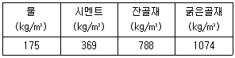
- 130.3kg/m3
- 131.3kg/m3
- 132.3kg/m3
- 133.3kg/m3
(정답률: 71%)
3. 콘크리트에 사용하는 혼화재료에 관한 다음의 일반적인 설명 중 적당하지 않은 것은?
- 실리카퓸은 실리카질 미립자의 미세충진 효과에 의해 콘크리트의 강도를 높인다.
- 플라이 애시는 유리질 입자의 잠재수경성에 의해 콘크리트의 초기강도를 증진시킨다.
- 팽창재는 에트린가이트 및 수산화칼슘 등의 생성에 의해 콘크리트를 팽창시킨다.
- 착색재는 콘크리트와 모르타르에 색을 입히는 혼화재로서 착색재를 혼화한 콘크리트는 본래의 콘크리트 특성과 함께 마무리재로서의 기능도 함께 가진다.
(정답률: 75%)
4. 강모래를 이용한 콘크리트에 비해 부순 잔골재를 이용한 콘크리트의 차이에 대한 설명으로 틀린 것은?
- 미세한 분말량이 많아짐에 따라 응결의 초결시간과 종결시간이 길어진다.
- 동일 슬럼프를 얻기 위해서는 단위수량이 5~10%정도 더필요하다.
- 건조수축률은 미세한 분말량이 많아지면 증대한다.
- 미세한 분말량이 많아지면 슬럼프가 저하하기 때문에 그 양에 의하여 잔골재율(S/a)을 낮춰준다.
(정답률: 62%)
5. 아래의 르 샤틀리에(Le-Chatelie)시험 결과에 따른 시멘트 비중은 얼마인가?
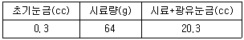
- 3.10
- 3.15
- 3.20
- 3.25
(정답률: 72%)
6. 플라이 애시의 품질 시험에서 시험 모르타르 제조시 보통포틀랜드 시멘트와 플라이 애시의 질량비는 얼마인가? (단, 보통 포틀랜드 시멘트 : 플라이 애시)
- 3 : 1
- 2 : 1
- 1 : 1
- 1 : 2
(정답률: 100%)
7. 설계기준 압축강도가 42MPa이고, 30회 이상의 시험실적으로부터 구한 압축강도의 표준편차가 5MPa 일때 콘크리트의 배합강도는?
- 47MPa
- 48.7MPa
- 49.5MPa
- 50.2MPa
(정답률: 43%)
8. 콘크리트 배합에서 굵은골재의 최대치수에 관한 규정으로 틀린 것은?
- 일반적인 구조물의 경우 굵은골재의 최대치수는 20mm 또는 25mm로 한다.
- 굵은골재의 최대치수는 거푸집 양 측면 사이의 최소 거리의 1/5을 초과해서는 안 된다.
- 굵은골재의 최대치수는 개별 철근, 다발철근, 긴장재 또는 덕트 사이 최소 순간격의 3/4을 초과해서는 안된다.
- 굵은골재의 최대치수는 슬래브 두께의 2/3을 초과해서는 안 된다.
(정답률: 62%)
9. 고로슬래그 미분말을 사용한 콘크리트에 대한 설명이다. 옳지 않은 것은?
- 고로슬래그 미분말을 사용한 콘크리트는 중성화 속도를 저하시키는 효과가 있다.
- 고로슬래그 미분말을 사용한 콘크리트는 철근 보호성능이 향상된다.
- 고로슬래그 미분말을 사용한 콘크리트는 수밀성이 크게 향상된다.
- 고로슬래그 미분말을 사용한 콘크리트의 초기강도는 포틀랜드시멘트 콘크리트보다 작다.
(정답률: 62%)
10. 철근콘크리트에 이용되는 길이가 300mm이고 직경이 20mm인 강봉에 인장력을 가한 결과 2.34×10-1mm가 신장되었다면 이 때 강봉에 가해진 인장력은 얼마인가? (단, 강봉의 탄성계수 = 2.0×105N/mm2)
- 20kN
- 37kN
- 40kN
- 49kN
(정답률: 58%)
11. 시멘트의 저장에 대한 콘크리트표준시방서의 규정을 설명한 것으로 틀린 것은?
- 시멘트는 방습적인 구조로 된 사일로 또는 창고에 품종별로 구분하여 저장하여야 한다.
- 시멘트의 온도가 너무 높을 때는 그 온도를 낮춘 다음 사용하여야 하며, 시멘트의 온도는 일반적으로 50℃정도 이하를 사용하는 것이 좋다.
- 포대시멘트를 쌓아서 저장하면 그 질량으로 인해 하부의 시멘트가 고결할 염려가 있으므로 시멘트를 쌓아올리는 높이는 13포대 이하로 하는 것이 바람직하다.
- 6개월 이상 장기간 저장한 시멘트는 사용하기에 앞서 재시험을 실시하여 그 품질을 확인한다.
(정답률: 87%)
12. 콘크리트 압축강도의 시험횟수가 22회 일 경우 배합강도를 결정하기 위해 적용하는 표준편차의 보정계수로 옳은 것은?
- 1.04
- 1.06
- 1.08
- 1.10
(정답률: 77%)
13. 모래 A의 조립률이 3.2이고, 모래 B의 조립률이 2.2인 모래를 혼합하여 조립률 2.8의 모래 C를 만들려면 모래 A와 B는 얼마의 비율로 섞어야 하는가?
- A : 30%, B : 70%
- A : 40%, B : 60%
- A : 50%, B : 50%
- A : 60%, B : 40%
(정답률: 67%)
14. 콘크리트용 감수제의 종류 중 응결, 초기경화의 속도에 따라 분류되는 형태가 아닌 것은?
- 급결형
- 촉진형
- 지연형
- 표준형
(정답률: 65%)
15. 아래 표는 굵은골재의 밀도 시험 결과 중의 일부이다. 이 굵은골재의 표면 건조 포화 상태의 밀도는? (단, 시험온도에서의 물의 밀도는 1g/cm3이다.)
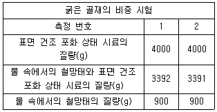
- 2.36g/cm3
- 2.61g/cm3
- 2.65g/cm3
- 2.77g/cm3
(정답률: 34%)
16. 다음 중 콘크리트용 고로 슬래그 미분말을 사용하지 못하는 경우는?
- 밀도가 2.90g/cm3인 경우
- 삼산화황이 3.0%인 경우
- 강열감량이 2.5%인 경우
- 염화물이온이 0.03%인 경우
(정답률: 53%)
17. 다음은 골재 15000g에 대하여 체가름 시험을 수행한 결과이다. 이 골재의 조립률은?
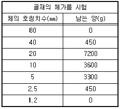
- 3.12
- 4.12
- 6.26
- 7.26
(정답률: 69%)
18. 다음 중 콘크리트용으로 사용하는 굵은 골재로 적합하지 않은 것은?
- 절대 건조상태의 밀도가 2.65g/cm3인 굵은 골재
- 안정성이 14%인 굵은 골재
- 흡수율이 2.7%인 굵은 골재
- 마모율이 37%인 굵은 골재
(정답률: 81%)
19. 시멘트의 강도 시험방법(KS L ISO 679)에 의해 시멘트의 압축강도 시험을 실시하고자 한다. 시멘트 450g을 사용하여 공시체를 제작할 때 모래의 사용량은?
- 900g
- 1125g
- 1350g
- 1800g
(정답률: 93%)
20. 내동해성을 기준으로 하여 물-결합재비를 정하는 경우 다음 노출상태에 해당하는 보통골재 콘크리트의 최대 물-결합재비는 얼마인가?
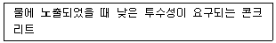
- 0.40
- 0.45
- 0.50
- 0.55
(정답률: 79%)
2과목: 제조, 시험 및 품질관리
21. 수분의 증발이 원인이 되어 타설 후부터 콘크리트의 응결 종결시까지 발생하는 균열을 초기 건조균열이라고 한다. 이러한 균열이 발생되기 쉬운 경우에 대한 설명으로 틀린 것은?
- 콘크리트 노출면의 수분 증발속도가 블리딩 속도보다 빠른 경우
- 바람이 없고 기온이 낮으며, 건조가 심한 경우
- 바닥판에서 거푸집으로부터의 누수가 심하고 블리딩이 전혀 없으며 초기에 콘크리트 표면에 수분이 부족한 경우
- 시멘트의 응결 ㆍ 경화가 급격하게 일어나 콘크리트 내부에 물이 흡수된 경우
(정답률: 47%)
22. 콘크리트의 비비기에 대한 설명으로 틀린 것은?
- 시험을 실시하지 않은 경우 강제식 믹서의 비비기 시간은 1분 이상을 표준으로 한다.
- 시험을 실시하지 않은 경우 가경식 믹서의 비비기 시간은 1분 30초 이상을 표준으로 한다.
- 비비기는 미리 정해둔 비비기 시간의 2배 이상 계속하지 않아야 한다.
- 연속믹서를 사용할 경우, 비비기 시작 후 최초에 배출되는 콘크리트는 사용하지 않아야 한다.
(정답률: 74%)
23. ø100×200mm 콘크리트 공시체에 축 하중 P=200kN을 가했을 때 세로 방향의 수축량을 구한 값으로 옳은 것은? (단, 콘크리트 탄성계수는 Ec=13730N/mm2라 한다.)
- 0.07mm
- 0.15mm
- 0.37mm
- 0.55mm
(정답률: 60%)
24. 콘크리트용 재료를 계량하고자 한다. 고로슬래그 미분말 50kg을 목표로 계량한 경과 50.6kg이 계량되었다면, 계량오차에 대한 올바른 판정은? (단, 콘크리트표준시방서의 규정을 따른다.)
- 계량오차가 1.2%로 혼화재의 허용오차 2% 내에 들어 합격
- 계량오차가 1.2%로 혼화제의 허용오차 3% 내에 들어 합격
- 계량오차가 1.2%로 고로슬래그 미분말의 허용오차 1%를 벗어나 불합격
- 계량오차가 1.2%로 고로슬래그 미분말의 허용오차 3%내에 들어 합격
(정답률: 74%)
25. 다음 중 콘크리트의 크리프에 영향을 미치는 요인에 대한 설명으로 틀린 것은?
- 습도가 낮을수록 크리프 변형은 커진다.
- 재하 하중이 클수록 크리프 변형은 커진다.
- 콘크리트 온도가 높을수록 크리프 변형은 커진다.
- 고강도의 콘크리트일수록 크리프 변형은 커진다.
(정답률: 86%)
26. 알칼리 골재 반응을 일으키는 알칼리의 주요 공급원 중 시멘트에서 유입되는 것은?
- Na2O
- NaCl
- SiO2
- Cl
(정답률: 44%)
27. 콘크리트 압축강도 시험에서 하중을 가하는 속도로 가장 적합한 것은?
- 압축 응력도의 증가율이 매초 0.6±0.4MPa이 되도록 한다.
- 압축 응력도의 증가율이 매초 1.2±0.6MPa이 되도록 한다.
- 압축 응력도의 증가율이 매초 4±2MPa이 되도록 한다.
- 압축 응력도의 증가율이 매초 6±MPa이 되도록 한다.
(정답률: 74%)
28. 안지름 25cm, 높이 28.5cm의 용기로 단위수량이 175kg/m3인 배합에 대하여 블리딩 시험을 한 결과 총 블리딩 수가 73.6cm3이었다면 블리딩률은 약 얼마인가?
- 3.0%
- 4.1%
- 4.7%
- 5.2%
(정답률: 53%)
29. 다음 중 길이, 질량, 강도 등의 데이터를 관리하기에 가장 이상적인 관리도는?
- p 관리도
- pn 관리도
- c 관리도
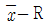
관리도
(정답률: 90%)
30. 굳지 않은 콘크리트의 슬럼프 시험에 대한 설명으로 틀린 것은?
- 다짐봉은 지름 16mm, 길이 500~600mm의 강 또는 금속제 원형봉으로 그 앞 끝을 반구 모양으로 한다.
- 슬럼프 콘에 시료를 채울 때 시료는 거의 같은 양의 3층으로 나눠서 채운다.
- 시료의 각 층은 다짐봉으로 25회씩 똑같이 다지며, 이 비율로 다져서 재료의 분리를 일으킬 경우에는 슬럼프 시험을 적용할 수 없다.
- 슬럼프 콘에 콘크리트를 채우기 시작하고 나서 슬럼프 콘의 들어 올리기를 종료할 때까지의 시간은 3분 이내로 한다.
(정답률: 67%)
31. 동일 품질의 콘크리트로 원주형 공시체(ø150×300mm), 각주형 공시체(150×150×450mm) 및 정육면체 공시체(한변길이 : 150mm)를 제작하여 압축강도를 측정할 경우 강도의 크기 순서로 적합한 것은?
- 원주형 ＞ 정육면체 ＞ 각주형
- 각주형 ＞ 정육면체 ＞ 원주형
- 정육면체 ＞ 원주형 ＞ 각주형
- 정육면체 ＞ 각주형 ＞ 원주형
(정답률: 42%)
32. 콘크리트 재료의 계량에 대한 설명으로 틀린 것은?
- 계량은 시방배합에 의해 실시하는 것으로 한다.
- 골재가 건조되어 있을 때의 유효 흡수율 값은 골재를 적절한 시간 흡수시켜 구한다.
- 혼화제를 녹이는 데 사용하는 물이나 혼화제를 묽게 하는데 사용하는 물은 단위 수량의 일부로 보아야 한다.
- 각 재료는 1배치씩 질량으로 계량하여야 하나, 물과 혼화제 용액은 용적으로 계량해도 좋다.
(정답률: 70%)
33. 일반콘크리트에 사용되는 시멘트, 혼합수 및 골재 등의 재료에 대한 품질관리 시기 및 횟수에 관한 설명으로 옳지 않은 것은?
- 시멘트 - 공사 시작 전, 공사 중 1회/월 이상 및 장기간 저장한 경우
- 상수도수 - 공사 시작 전
- 부순모래 - KS F 2527에 규정된 항목에 대해 공사 시작전, 공사 중 1회/월 이상 및 산지가 바뀐 경우
- 강자갈 - 알칼리 실리카 반응성의 항목에 대해 1회/월 이상 및 산지가 바뀐 경우
(정답률: 71%)
34. 콘크리트의 워커빌리티 및 반죽질기에 영향을 주는 인자에 대한 설명으로 틀린 것은?
- 단위 수량을 증가시키면 재료분리와 블리딩현상이 줄어들어 워커빌리티가 좋아진다.
- 단위 수량이 많을수록 콘크리트의 반죽질기가 질게 되어 유동성이 크게 된다.
- 단위 시멘트량이 많아질수록 콘크리트의 성형성은 증가하므로, 일반적으로 부배합 콘크리트가 빈배합 콘크리트에 비해 워커빌리티가 좋다고 할 수 있다.
- 일반적으로 분말도가 높은 시멘트의 경우에는 시멘트 풀의 점성이 높아지므로 반죽질기는 작게 된다.
(정답률: 44%)
35. 콘크리트 배치믹서는 중력식 믹서와 강제식 믹서로 크게 나눌 수 있다. 다음 중 중력식 믹서에 해당하는 것은?
- 팬형 믹서
- 1축 믹서
- 2축 믹서
- 드럼 믹서
(정답률: 77%)
36. 현장에서 타설하는 콘크리트를 대상으로 압축강도에 의한 콘크리트의 품질검사를 실시하고자 한다. 하루에 300m3의 콘크리트가 제조 및 타설된다면 검사 횟수는? (단, 1회 시험값은 공시체 3개의 압축강도 시험값의 평균값이며, 콘크리트표준시방서의 규정에 따른 다.)
- 2회
- 3회
- 4회
- 5회
(정답률: 70%)
37. 반발경도 시험에 사용되는 테스트 해머의 종류에 따른 적용 콘크리트로서 틀린 것은?
- N형 - 보통 콘크리트용
- L형 - 경량 콘크리트용
- M형 - 매스 콘크리트용
- P형 - 고강도 콘크리트용
(정답률: 78%)
38. 어느 레미콘 공장의 콘크리트 압축강도 시험결과 표준편차가 1.5MPa 이었고, 압축강도의 평균값이 39.6MPa 이었다면 이 콘크리트의 변동계수는?
- 2.8%
- 3.8%
- 4.5%
- 5.5%
(정답률: 56%)
39. 콘크리트 비파괴시험 방법의 일종인 초음파법에 의하여 측정하거나 추정할 수 없는 것은?
- 압축강도
- 균열깊이
- 건조수축량
- 전파속도
(정답률: 53%)
40. 콘크리트 생산시 각 재료의 계량 오차의 허용 범위로 옳은 것은?
- 물 : ±3%
- 골재 : ±3%
- 시멘트 : ±2%
- 혼화제 : ±2%
(정답률: 84%)
3과목: 콘크리트의 시공
41. 유동화 콘크리트에 대한 설명으로 옳은 것은?
- 베이스 콘크리트 및 유동화 콘크리트의 슬럼프 및 공기량 시험은 50m3마다 1회씩 실시하는 것을 표준으로 한다.
- 유동화 콘크리트의 슬럼프 증가량은 120mm 이하를 원칙으로 하며, 80~100mm를 표준으로 한다.
- 유동화제는 물로 희석하여 사용하여야 하며, 미리 정한 소정의 양을 조금씩 첨가하면서 유동화 시켜야 한다.
- 유동화 콘크리트의 운반 지연으로 슬럼프 감소가 발생할 경우 재유동화를 실시하여야 하며, 재유동화 횟수는 3회를 초과할 수 없다.
(정답률: 24%)
42. 일반 콘크리트를 2층 이상으로 나누어 타설할 경우, 외기온이 25℃를 초과할 때 이어치기 허용시간 간격의 표준으로 옳은 것은?
- 1시간
- 1시간 30분
- 2시간
- 2시간 30분
(정답률: 74%)
43. 프리플레이스트 콘크리트에 사용되는 굵은 골재에 대한 설명으로 틀린 것은?
- 일반적인 프리플레이스트 콘크리트용 굵은 골재의 최소 치수는 15mm 이상으로 하여야 한다.
- 일반적으로 굵은 골재의 최대 치수는 최소 치수의 2~4배 정도로 한다.
- 대규모 프리플레이스트 콘크리트를 대상으로 할 경우, 굵은 골재의 최소 치수가 클수록 주입 모르타르의 주입성이 현저하게 개선되므로 굵은 골재의 최소 치수는 40mm 이상이어야 한다.
- 굵은 골재의 최대 치수와 최소 치수와의 차이를 적게 하면 굵은 골재의 실적률이 커지고 주입 모르타르의 소요량이 적어진다.
(정답률: 45%)
44. 한중콘크리트에 대한 일반적인 설명으로 틀린 것은?
- 하루의 평균기온이 4℃ 이하가 예상되는 조건일 때는 한중콘크리트로 시공하여야 한다.
- 한중콘크리트에는 AE콘크리트를 사용하는 것을 원칙으로 한다.
- 물-결합재비는 원칙적으로 50% 이하로 하여야 한다.
- 재료를 가열할 경우, 물 또는 골재를 가열하는 것으로 하며, 시멘트는 어떠한 경우라도 직접 가열할 수 없다.
(정답률: 62%)
45. 연직시공이음에 대한 설명으로 틀린 것은?
- 구 콘크리트의 시공이음면은 쇠솔이나 쪼아내기 등에 의해 거칠게 한다.
- 이음을 좋게 하기 위해 구 콘크리트의 시공이음면에 시멘트 페이스트, 모르타르, 습윤면용 에폭시수지 등을 바른다.
- 시공이음면의 거푸집으로 설치되는 철망은 철근 등으로 지지시키는 것이 좋다.
- 시공이음부의 거푸집제거 시기는 콘크리트 타설 후 여름에는 10~15시간 정도로 한다.
(정답률: 50%)
46. 해양콘크리트에 대한 설명으로 틀린 것은?
- 육상구조물 중에 해풍의 영향을 많이 받는 구조물도 해양 콘크리트로 취급하여야 한다.
- PS강재와 같은 고장력강에 작용응력이 인장강도의 60%를 넘을 경우 응력부식 및 강재의 부식피로를 검토하여야 한다.
- 만조위로부터 위로 0.6m, 간조위로부터 아래로 0.6m사이의 감조부분에는 시공이음이 생기지 않도록 시공계획을 세워야 한다.
- 시멘트는 보통포틀랜드 시멘트를 사용하는 것을 원칙으로 한다.
(정답률: 65%)
47. 매스 콘크리트에 대한 일반적인 설명으로 틀린 것은?
- 굵은 골재의 최대 치수는 작업성이나 건조수축 등을 고려하여 되도록 작은 값을 사용하여야 한다.
- 고로 슬래그 미분말을 혼입하는 경우 슬래그는 온도 의존성이 크기 때문에 콘크리트의 타설온도가 높아지면 슬래그를 사용하지 않는 경우보다 발열량이 증가하여, 오히려 콘크리트 온도가 상승하는 경우도 있다.
- 매스 콘크리트의 온도균열은 콘크리트 내부와 표면부의 온도 차이가 커지는 경우에 많이 발생하므로, 거푸집은 온도 차이를 줄일 수 있도록 보온성이 좋은 것을 사용하고 존치기간을 길게 하여야 한다.
- 매스 콘크리트의 타설온도는 온도균열을 제어하기 위한 관점에서 가능한 한 낮게 하여야 한다.
(정답률: 37%)
48. 일반 콘크리트에서 균열의 제어를 목적으로 균열유발이음을 설치할 경우 간격 및 단면의 결손율에 대한 설명으로 옳은 것은?
- 균열유발 이음의 간격은 0.3~1m 이내로 하고 단면의 결손율은 30%를 약간 넘을 정도로 하는 것이 좋다.
- 균열유발 이음의 간격은 부재높이의 1배 이상에서 2배 이내 정도로 하고 단면의 결손율은 20%를 약간 넘을 정도로 하는 것이 좋다.
- 균열유발 이음의 간격은 1~2m 이내로 하고 단면의 결손율은 20%를 약간 넘을 정도로 하는 것이 좋다.
- 균열유발 이음의 간격은 부재높이의 2배 이상에서 3배 이내 정도로 하고 단면의 결손율은 30%를 약간 넘을 정도로 하는 것이 좋다.
(정답률: 53%)
49. 콘크리트의 경화나 강도 발현을 촉진하기 위해 실시하는 촉진양생방법에 속하지 않는 것은?
- 전기양생
- 막양생
- 상압증기양생
- 고온고압양생
(정답률: 66%)
50. 이미 경화한 매시브한 콘크리트 위에 슬래브를 타설할 때 부재평균 최고온도와 외기온도와의 균형시의 온도차가 12.8℃발생하였을 때 아래의 표를 이용하여 온도균열 발생확률을 구하면? (단, 간이법 적용)
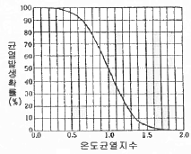
- 약 5%
- 약 15%
- 약 30%
- 약 50%
(정답률: 67%)
51. 포장 콘크리트의 시공에 사용되는 이음판의 필요한 성질에 대한 설명으로 틀린 것은?
- 콘크리트 슬래브의 팽창을 어느 정도까지는 허용하나, 콘크리트를 다질 때 현저하게 줄어들 정도로 압축 저항이 적지 않을 것
- 콘크리트 슬래브가 수축할 때는 가능한 원래의 두께로 되돌아 올 것
- 흡수성과 투수성이 클 것
- 휘어지거나 비틀어지지 않고 시공이 간편할 것
(정답률: 89%)
52. 일반 콘크리트의 다지기에 대한 설명으로 옳지 않은 것은?
- 콘트리트는 타설 직후 바로 충분히 다져서 콘크리트가 철근 및 매설물 등의 주위와 거푸집의 구석구석까지 잘 채워져 밀실한 콘크리트가 되도록 한다.
- 재진동을 할 경우에는 콘크리트에 나쁜 영향이 생기지 않도록 초결이 일어난 후에 실시하여야 한다.
- 내부진동기는 콘크리트로부터 천천히 빼내어 구멍이 남지 않도록 하여야 한다.
- 진동다지기를 할 때에는 내부진동기를 아래층의 콘크리트 속으로 0.1m 정도 찔러 넣어야 한다.
(정답률: 87%)
53. 섬유보강콘크리트의 배합 및 비비기에 대한 설명으로 틀린 것은?
- 강섬유보강 콘크리트의 경우, 소요 단위수량은 강섬유의 혼입률에 거의 비례하여 증가한다.
- 믹서는 가경식 믹서를 사용하는 것을 원칙으로 한다.
- 배합을 정할 때에는 일반 콘크리트의 배합을 정할 때의 고려사항과 아울러 콘크리트의 휨강도 및 인성이 소요의 값으로 되도록 고려할 필요가 있다.
- 믹서에 투입된 섬유이 분산에 필요한 비비기 시간은 섬유의 종류나 혼입률에 따라 다르다.
(정답률: 74%)
54. 공장 제품 콘크리트에 대한 일반적인 설명으로 틀린 것은?
- 공장 제품에 사용되는 섬유보강재는 주로 강섬유와 합성수지계 섬유를 사용하며, 일부의 경우 카본섬유나 아라미드 등의 고성능 섬유를 사용하기도 한다.
- 프리스트레스트 콘크리트 공장 제품의 경우 순환골재를 사용할 수 없다.
- 촉진양생을 하는 일반적인 공장 제품의 강도는 재령 28일에서 압축 강도 시험값을 기준으로 한다.
- 일반적으로 공장 제품에서는 물-결합재비가 적은 된반죽의 콘크리트가 사용되므로 이와 같은 콘크리트를 비빌 때에는 강제식 믹서가 적합하다.
(정답률: 39%)
55. 고강도 콘크리트의 특성에 대한 설명으로 틀린 것은?
- 보통강도를 갖는 콘크리트에 비해 재령에 따른 강도발현이 빠르게 나타나면서 늦게까지 강도증진이 이루어진다.
- 고강도 콘크리트는 부배합이므로 시멘트 대체 재료인 플라이애시, 고로슬래그 분말 등을 같이 사용하는 경우가 많다.
- 고강도 콘크리트의 설계기준압축강도는 일반적으로 40MPa 이상으로 하며, 고강도 경량골재 콘크리트는 27MPa 이상으로 한다.
- 고강도 콘크리트는 설계기준강도가 높은 반면에 내구성은 낮으므로 해양 콘크리트 구조물에는 부적절하다.
(정답률: 56%)
56. 내구성으로부터 정해진 수중불분리성 콘크리트의 최대물-결합재기(%)를 나타내는 아래 표에 들어갈 숫자로 옳은 것은?
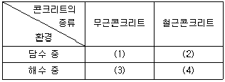
- (1) 65, (2) 55, (3) 60, (4) 50
- (1) 60, (2) 55, (3) 65, (4) 50
- (1) 65, (2) 50, (3) 60, (4) 55
- (1) 60, (2) 50, (3) 65, (4) 55
(정답률: 73%)
57. 숏크리트의 초기강도 표준값으로 옳은 것은?
- 재령 3시간에서 1.0~3.0MPa
- 재령 6시간에서 1.0~3.0MPa
- 재령 12시간에서 3.0~5.0MPa
- 재령 24시간에서 10.0~15.0MPa
(정답률: 50%)
58. 포장 콘크리트의 배합기준에서 설계기준 휨강도(f28)는 몇 MPa 이상이어야 하는가?
- 2.5 MPa
- 4 MPa
- 4.5 MPa
- 6 MPa
(정답률: 69%)
59. 숏크리트에서 섬유뭉침(fiber-ball)현상을 설명한 것으로 옳은 것은?
- 굵은 골재의 최대치수가 커질수록 섬유뭉침현상이 증가한다.
- 굵은 골재의 최대치수가 커질수록 섬유뭉침현상이 감소한다.
- 잔골재량이 증가할수록 섬유뭉침현상이 증가한다.
- 잔골재향이 증가할수록 섬유뭉침현상이 감소한다.
(정답률: 65%)
60. 한중콘크리트 시공시 비빈 직후 콘크리트의 온도 및 주위기온이 아래의 조건과 같을 때, 타설이 완료된 후 콘크리트의 온도를 계산하면?
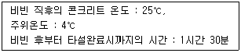
- 19.8℃
- 20.3℃
- 21.6℃
- 22.5℃
(정답률: 59%)
4과목: 구조 및 유지관리
61. 철근콘크리트 교량의 슬래브에 균열이 발생하였을 때 적용할 수 있는 보수ㆍ보강 방법으로 거리가 먼 것은?
- 강판접착공법
- 수지주입공법
- 연속섬유시트감기공법
- FRP 접착공법
(정답률: 39%)
62. 콘크리트보강공법의 일종인 상면 두께증설공법은 상판콘크리트 상면을 절삭ㆍ연마한 후 강섬유 보강콘크리트 등으로 상면의 두께를 증설하는 공법이다. 이 공법의 특징을 설명한 것으로 틀린 것은?
- 일반포장용 기계로 시공이 가능하고, 공기가 짧다.
- 상판 상면에서의 작업이므로 비계 등을 구성할 필요가 없다.
- 상판의 유효두께가 커져서 휨, 전단 및 비틀림 등에 대해서도 보강효과가 얻어진다.
- 증가되는 상판의 두께에 제한없이 적용가능하므로, 기존 구조물보다 상당히 큰 내하력을 얻을 수 있다.
(정답률: 50%)
63. 그림과 같은 단면에 As=4-D25(2028mm2)이 배근 되어 있고, 계수전단력 Vu =200kN, 계수휨모멘트 Mu =40kNㆍm가 작용하고 있는 보가 있다. 콘크리트가 부담할 수 있는 전단강도(Vc)를 정밀식을 사용하여 구하면? (단, fck =21MPa, fy=400MPa 이고, Mu 는 전단을 검토하는 단면에서 Vu 와 동시에 발생하는 계수휨모멘트이다.)
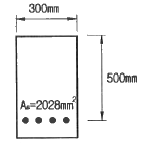
- 237.6 kN
- 199.3 kN
- 145.7 kN
- 107.6 kN
(정답률: 18%)
64. 경간이 8m인 단순 지지된 철근콘크리트 보에서 처짐을 계산하지 않는 경우의 최소 두께(h)는? (단, 사용 철근의 fy =350MPa이다.)
- 400mm
- 437mm
- 465mm
- 500mm
(정답률: 25%)
65. 전자파 레이더법에서 반사물체까지의 거리(D)를 구하는 식으로 옳은 것은? (단, V는 콘크리트내의 전자파속도, T는 입사파와 반사파의 왕복전파시간)
- D = VT/2
- D = VT/√2
- D = VT/3
- D = VT/√3
(정답률: 69%)
66. 그림과 같은 T형단면에 3-D35(As =2870mm2)의 철근이 배근되었을때 압축연단에서 중립축까지의 거리(c)는? (단, fck=30MPa, fy=400MPa이다.)
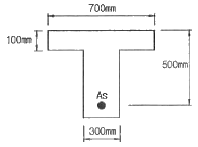
- 64.3mm
- 73.6mm
- 76.9mm
- 80.9mm
(정답률: 44%)
67. 염화물 침투에 따른 철근 부식으로 발생하는 균열을 억제하기 위한 방법으로 적절하지 못한 것은?
- 밀실한 콘크리트 시공
- 저알칼리 시멘트 사용
- 충분한 피복두께 확보
- 에폭시수지 도포 철근 사용
(정답률: 54%)
68. 콘크리트를 타설하고 다짐하여 마감작업을 한 이후에도 콘크리트는 계속하여 압밀하는 경향을 보인다. 이러한 현상으로 발생하는 굳지 않은 콘크리트의 균열을 침하균열이라 한다. 이러한 침하균열에 영향을 미치는 요소에 대한 설명으로 틀린 것은?
- 콘크리트 피복두께가 클수록 침하균열은 증가한다.
- 슬럼프가 클수록 침하균열은 증가한다.
- 배근한 철근의 직경이 클수록 침하균열은 증가한다.
- 누수되는 거푸집을 사용한 경우 침하균열은 증가한다.
(정답률: 18%)
69. 아래 그림과 같은 단철근 직사각형보에서 휨설계에 적용하기 위한 강도감소계수(ø)는 약 얼마인가? (단, fy =400MPa)
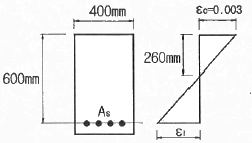
- 0.78
- 0.80
- 0.83
- 0.85
(정답률: 40%)
70. 그림의 복철근 단면이 압축부에 3-D22(As’=1161mm2)의 철근과 인장부에 6-32(As=4765mm2)의 철근을 갖고 있을 때 공칭 휨강도(Mn)를 구하면? (단, 파괴시 압축부의 철근이 항복한다고 가정하고, fck=28MPa, fy=350MPa이다.)
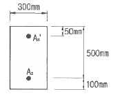
- 702.1kNㆍm
- 747.6kNㆍm
- 785.7kNㆍm
- 824.3kNㆍm
(정답률: 25%)
71. 단면 복구재로서 폴리머 시멘트계 재료가 일반 콘크리트 재료보다 우수하지 않은 것은?
- 염분 차단성
- 내화 ㆍ 내열성
- 부착성
- 방수성
(정답률: 66%)
72. 다음 그림과 같은 압축부재의 설계축강도(øPn(max ))는? (단, fck=24MPa, fy=350MPa, 종방향 철근의 전체 단면적(Ast)는 4000mm2이며, 단주기둥으로 ø=0.65이다.)
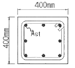
- 1955kN
- 2382kN
- 2579kN
- 2848kN
(정답률: 40%)
73. 프리스트레스트 콘크리트 구조의 장점에 대한 설명으로 틀린 것은?
- 프리스트레스트 콘크리트는 내화성이 철근 콘크리트보다 우수하다.
- 프리스트레스트 콘크리트는 부재의 확실한 강도와 안전율을 갖게 할 수 있다.
- 프리스트레스트 콘크리트는 설계 하중하에서 콘크리트에 균열이 생기지 않으므로 내구성이 크다.
- 프리스트레스트 콘크리트는 구조물이 가볍고 복원성이 우수하다.
(정답률: 59%)
74. 고정하중 20kN/m, 활하중 25kN/m의 등분포하중을 받는 경간 8m의 단수보에 작용하는 최대 계수휨모멘트(Mu)를 구하면? (단, 하중계수와 하중조합을 고려하여 구할 것)
- 479kNㆍm
- 512kNㆍm
- 548kNㆍm
- 579kNㆍm
(정답률: 50%)
75. 구조물 안전성 평가를 위해 재하시험을 실시할 경우 재하기준에 대한 설명으로 틀린 것은?
- 시험하중은 4회 이상 균등하게 나누어 증가시켜야 한다.
- 등분포 시험하중은 시험대상 부재의 취약상황을 파악할 수 있도록 작용시켜야 하며, 특히 시험대상 부재에 하중이 불균등하게 전달되는 아치현상을 유발하도록 재하하여야 한다.
- 응답측정값은 각 하중단계에 따라 하중이 가해진 직후, 그리고 시험하중이 적어도 24시간 동안 구조물에 작용된 후에 측정값을 읽어야 한다.
- 최종 잔류 측정값은 시험하중이 제거된 후 24시간이 경과하였을 때 읽어야 한다.
(정답률: 25%)
76. 그림과 같은 정사각형 독립확대기초 저변에 작용하는 지압력이 q=160kN/m2일 때 휨에 대한 위험단면의 모멘트는 얼마인가?
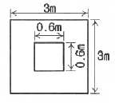
- 345.6kNㆍm
- 375.4kNㆍm
- 395.7kNㆍm
- 425.3kNㆍm
(정답률: 34%)
77. 교량구조물의 안전진단 및 평가에서 정적재하시험을 할 때 측정하여야 할 사항이 아닌 것은?
- 주거더의 처짐
- 콘크리트의 변형률
- 가속도
- 재하차량의 중량
(정답률: 58%)
78. 철근콘크리트구조물에서 균열 폭을 줄일 수 있는 방법에 대한 설명으로 틀린 것은?
- 같은 철근량을 사용할 경우 굵은 철근을 사용하기 보다는 가는 철근을 많이 사용한다.
- 철근에 발생하는 응력이 커지지 않도록 충분하게 배근한다.
- 철근이 배근되는 곳에서 피복두께를 크게 한다.
- 콘크리트의 인장구역에 철근을 골고루 배치한다.
(정답률: 65%)
79. 콘크리트 구조물의 재하시험은 하중을 받는 구조 부분의 재령이 최소한 몇 일이 지난 다음에 재하시험을 시행하여야 하는가?
- 14일
- 28일
- 56일
- 84일
(정답률: 54%)
80. 단철근 직사각형보에서 fck=30MPa, fy=300MPa일 때 균형철근비를 구한 값은?
- 0.025
- 0.034
- 0.047
- 0.⑤2
(정답률: 32%)